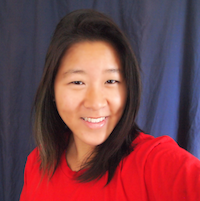
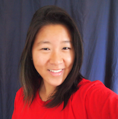

Hi. My name is Cathy. I'm a junior studying computer engineering at the University of Southern California. Here are some words that describe me.
Engineer Developer Student
I like these words.
Soliloquy Splendiferous
I like this poem.
Here are some more words.
Puzzler Tree hugger Juice drinker Cat person Tamale lover East coast (now Southern California) girl
Scroll down to learn more
My resume 
education
University of Southern California May 2017 B.S. Computer Engineering & Computer Science USC Presidential Scholar, FLAS Fellow GPA: 3.76/4.0
honors
10xList Engineer Top 500 Women College Engineers in the United States
Tau Beta Pi Engineering Honor Society Top 13% of class
1st Place, “It’s All About Inclusion” Computer Science Competition Accessible technology proposal
extracurriculars
Women in Computing, Co-President
USC Bicycle Coalition, President
Tau Beta Pi Engineering, Program Director
USC LGBTQ Outreach, Publicity Chair
work
Global Playground, Web Content Manager October 2011 - present
Managing, updating, and improving the official Global Playground websiteIntel, MIC Software Intern Summer 2014
Developed streaming library within Intel® Manycore Platform Software StackIntel, BIOS Intern Summer 2013
Developed Python API layer of Intel® BIOS Implementation Test Suite (open source at biosbits.org)USC Spatial Sciences Institute, Student Researcher Fall 2013
Developed Tesseract OCR-based software map analysisNASA Goddard, Web Intern Summer 2011
Designed and updated six spaceflight instrument websitesprojects
Open Canteen
Yelp-like web app to search, rate, and review foods in university cafeterias. Class project created in a team of 3.SimCity 201
Full agent-oriented city simulation. Class project created in a team of 6.Shortlog
Personal micro-journal web app. Created in a team of 5 at LA Hacks 2013 (top 5 out of 44)Audio Alert
Android app using FFT to alert hearing-impared users of auditory warning sounds. Created in a team of 3 at 2013 Project: Possibility SS12 Hackathon (1st Place)High Flyer
Obstacle avoidance game created in C++ and Qt.skills
C/C++ Java Python Perl HTML CSS Javascript Verilog Inkscape
Things I've worked on 
FemAffirm
Open Canteen
Star Hunter
SimCity 201
Shortlog
High Flyer
Audio Alert
Things I like 

Bikes
There's something empowering about riding a bike. As head of the USC Bicycle Coalition and chapter representative for the LA County Bicycle Coalition, most of my energy these days is spent on bike advocacy and education.

Nature
Keep nature natural. In daily life and as part of the sustainability movement making waves on campus, I'm a staunch advocate for our planet Earth.

Rugby
Tore 3 ligaments in my first game. GG.

Rowing
Proudly rowed for USC Women's and the Hong Kong University of Science and Technology.

Rainbows
Strong supporter of equality for all, whether through volunteering, organizing professional events, or marching in a pride parade.

Tech
Innovation and diversity go hand in hand. As president of USC Women in Computing, I'm building community, supporting and raising up my lady peers in tech, and doing my part to keep the percentage of USC women in CS above 20%.